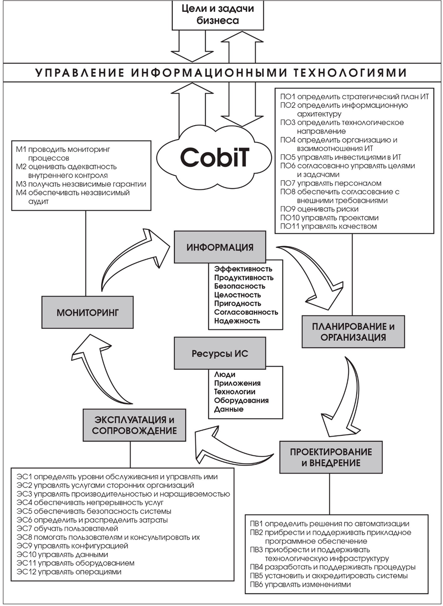

Домены и процессы CobiT
В основу стандарта CobiT положено следующее утверждение: для предоставления информации, необходимой организации для достижения ее целей, ресурсы ИТ должны управляться набором естественно сгруппированных процессов.
Для этого CobiT выделяет 34 высокоуровневые цели контроля, по одной на каждый ИТпроцесс, которые сгруппированы в 4 домена:
- Планирование и Организация
- Проектирование и Внедрение
- Эксплуатация и Сопровождение
- Мониторинг
Предлагаемая структура объединяет все аспекты информации и технологий, поддерживающих ее. Применяя 34 высокоуровневые цели контроля, руководитель может быть уверен, что ему будет предоставлена адекватная система контроля над ИТ-средой, которая учитывает задействованные ресурсы ИТ, дающая возможность оценить ИТ по предлагаемым CobiT семи критериям оценки информации.
Ресурсы
Ресурсы ИТ в CobiT описаны пятью составляющими:
- Данные – объекты в широком смысле (то есть внутренние и внешние), структурированные и неструктурированные, а также графика, звук и т.д.
- Приложения – совокупность автоматизированных и выполняемых вручную процедур.
- Технология – аппаратное обеспечение, программное обеспечение, операционные системы, системы управления базами данных, сетью и мультимедиа.
- Оборудование – все ресурсы, создающие и поддерживающие информационные технологии.
- Люди – персонал, его навыки: умение планировать и организовывать, комплектовать, обслуживать и контролировать информационные системы и услуги.
При этом денежные средства или капитал не рассматриваются в качестве ИТ-ресурса. Они могут рассматриваться в качестве инвестиций в любой из вышеуказанных ресурсов.
Критерии оценки информации
- Эффективность – актуальность информации, соответствующего бизнес-процесса, гарантия своевременного и регулярного получения правильной информации.
- Продуктивность – обеспечение доступности информации с помощью оптимального (наиболее продуктивного и экономичного) использования ресурсов.
- Конфиденциальность – обеспечение защиты информации от неавторизованного ознакомления.
